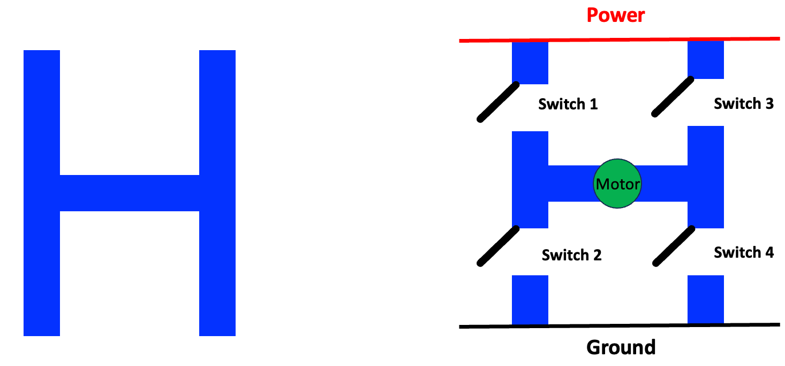

H-Bridge

Prompt
Prompt Text
The image above describes an H-Bridge circuit for changing the direction of a motor. We have an animated H-Bridge board that allows students to change the setting of four switches to make an pattern of LED lights simulate current flowing through a motor.
Please generate a sample five-minute dialog between a
teacher-volunteer-mentor and a student.
The dialog should walk through showing the switch positions
for forward (green LED with the theater chase pattern),
reverse (blue LEDs with the theater chase pattern) and
short circuit (red LEDs).
Both the left and right can be short circuited.
Sample Response Dialog
Teacher: Hi there! Come check this out. We've got this cool H-Bridge demonstration board. It simulates how reversing the polarity of a motor's connections changes its direction. Do you know what an H-Bridge is?
Student: Not really. I see something that looks like the letter "H" and some switches, but I'm not sure how it works.
Teacher: No problem. Imagine we have a motor in the middle of this "H." We have four switches: two on the top and two on the bottom, one pair on the left side and one pair on the right side. By closing or opening these switches, we control how electricity flows through the motor. That lets us make the motor spin forward, backward, or even create a short circuit if we're not careful.
Student: So, different switch settings cause different directions?
Teacher: Exactly. Watch the LEDs. The board uses different colors and patterns to show what's happening. Let's start with the "forward" direction. To go forward, we need current flowing through the motor from left to right or right to left depending on how we define it. In this case, let's say forward means turning on the top-left switch and the bottom-right switch.
Student: So I flip the top-left switch "on" and the bottom-right switch "on." What happens?
Teacher: Go ahead. Flip those two switches. See the green LEDs lighting up with that theater chase pattern?
Student: Wow, they're green and kind of moving in a sequence!
Teacher: That green theater chase pattern represents current flowing in one direction. This means the motor would spin in the forward direction if it were actually hooked up. We call this "forward" mode.
Student: Cool! So that's how we get forward motion. How about reverse?
Teacher: To reverse the motor, we want the electricity to flow in the opposite direction. That means we switch it around. Instead of top-left and bottom-right, let's try top-right and bottom-left switches this time.
Student: Okay, I'll turn off the top-left and bottom-right, and turn on the top-right and bottom-left.
Teacher: Great. Now look at the LEDs again. See how they turned blue, and you've got that same theater chase effect, but in blue?
Student: Yes, I see blue LEDs chasing. That means the current is flowing the opposite way?
Teacher: Exactly. Blue represents the reverse direction. If this were a real motor, it would now spin the other way.
Student: So green is forward, and blue is reverse. That's easy to remember.
Teacher: Perfect. Now, there's another scenario we should talk about---what if you accidentally create a short circuit? That can happen if you turn on both switches on the same side at the same time, for example both top switches together, or both bottom switches together, without giving the current a proper path through the motor.
Student: So if I turn on both top-left and top-right at the same time, what happens?
Teacher: Give it a try. Turn off your previous switches first. Now flip on top-left and top-right.
Student: Whoa, the LEDs are now red!
Teacher: That's the short circuit warning. Red LEDs light up to show that if this were a real circuit, you'd be connecting the power directly from the positive line to the negative line without going through the motor. That can damage the battery, wires, or the motor driver in a real situation.
Student: So red means I've made a bad connection?
Teacher: Exactly. Short circuits are something you want to avoid. The same thing happens on the bottom side. If you turn on both bottom-left and bottom-right switches at the same time, you'll get red LEDs too, indicating another type of short.
Student: I see. So the correct combinations are:
- Forward: Top-left and Bottom-right (Green)
- Reverse: Top-right and Bottom-left (Blue)
- Short circuits if I turn on both top or both bottom together (Red)
Teacher: That's a perfect summary. This H-Bridge demo helps you see how changing which switches are closed reverses the motor direction and how certain incorrect settings create a short. In a real robot, we use transistor-based circuits, or integrated chips called H-Bridge drivers, instead of manual switches. But the idea is the same.
Student: This is really helpful. Now I understand why they call it an H-Bridge---it literally looks like an "H," and we're bridging the current across the motor in different ways.
Teacher: That's right. With this knowledge, you can picture how robots and other machines change direction with just a few electronic switches. Good job exploring the concept!